순위 기준과 걸러야 할 쇼츠 자동화
발표자는 2년 넘게 클로드에 400만 원 넘게 썼다고 해요. 그중 세 가지는 직접 돈을 받아 본 방법이에요. 화면의 체크 세 개가 그 목록이에요. AI 글쓰기 자동화, 전자책·강의 판매, 프로그램 개발 외주예요.
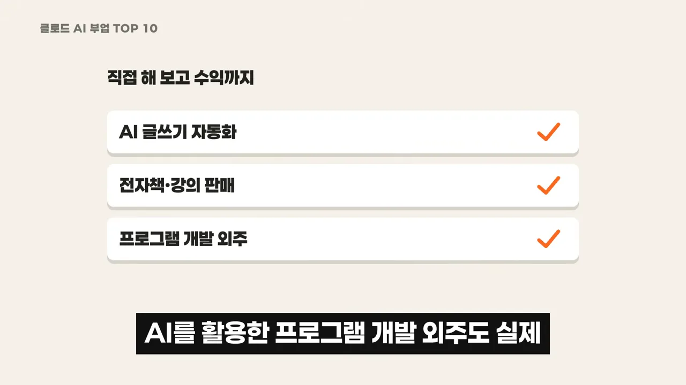
그래서 순위의 잣대도 'AI니까 될 것 같다'가 아니에요. '실제로 돈을 내는 사람이 있는가'예요. 클로드가 뭔가를 만드는 것과 돈을 버는 건 다른 문제라는 거죠.
클로드 코드는 컴퓨터 안의 직원 한 명
처음부터 다시 시작한다면 무엇을 배우겠느냐는 질문에, 발표자는 클로드, 그중에서도 클로드 코드를 꼽아요. 바이브 코딩 기초가 없어도 괜찮대요. 코딩 언어를 외우기보다 원하는 결과를 AI에게 설명하고 직접 만들어 보면 된다고 해요.
발표자는 클로드 코드를 사업을 함께 꾸리는 직원 한 명에 비유해요. 홈페이지나 프로그램을 만들고, 글 쓰는 과정을 자동화하고, 자료를 정리하고, 반복 업무를 줄여 줘요. 하지만 직원이 있다고 돈이 저절로 벌리진 않아요. 화면의 세 칸이 그 순서예요. 무엇을 만들어, 누구의 문제를 해결하고, 어떻게 돈으로 바꿀까예요.
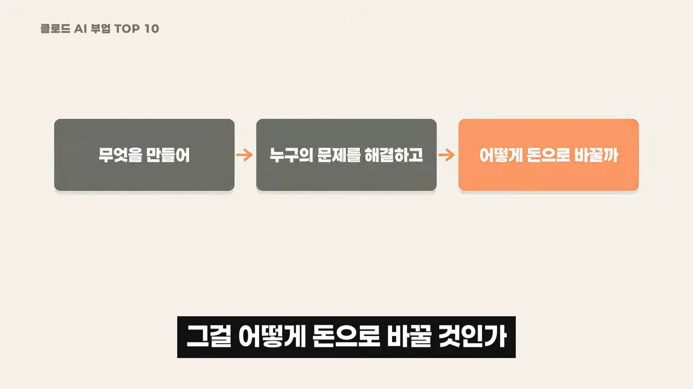
순위를 매기는 네 가지 기준
순위는 아래 네 칸으로 매겨요. 3번과 4번이 묶여서 '나중에 하루 30분만 써도 월 60만 원이 꾸준히 들어오느냐'가 이 영상의 목표선이에요. 뒤에 나오는 방법마다 이 숫자에 얼마나 가까운지를 따져요.
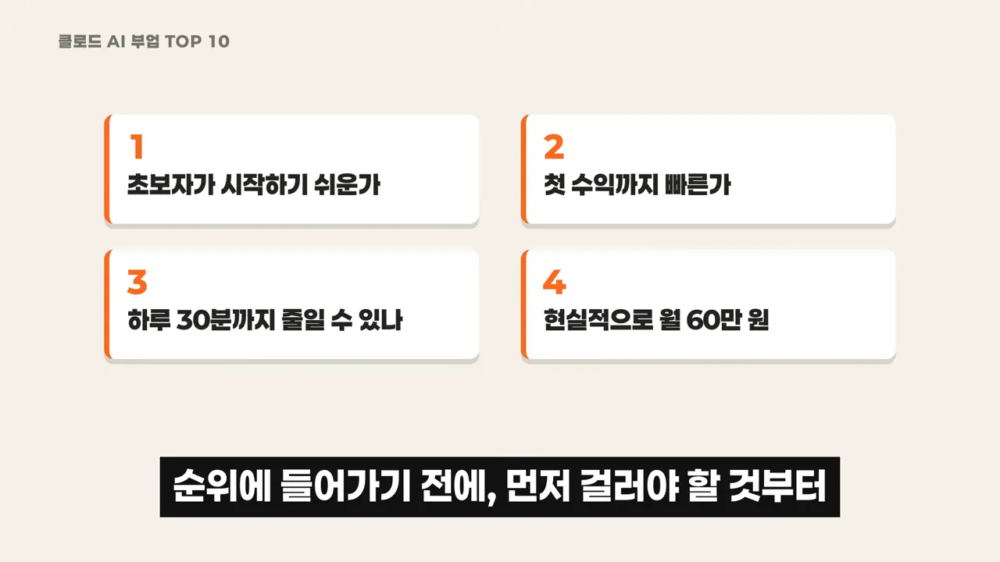
순위에서 뺀 것: AI 쇼츠 완전 자동화
요즘 많이 보이는 방식이에요. 위쪽 줄처럼 주제 찾기, 대본, AI 음성, 영상 제작을 자동으로 돌리고, 아래 카드처럼 하루 15~30개를 쏟아 올려요. 화면 오른쪽 아래 '오늘 업로드 30개'가 그 분량이에요.
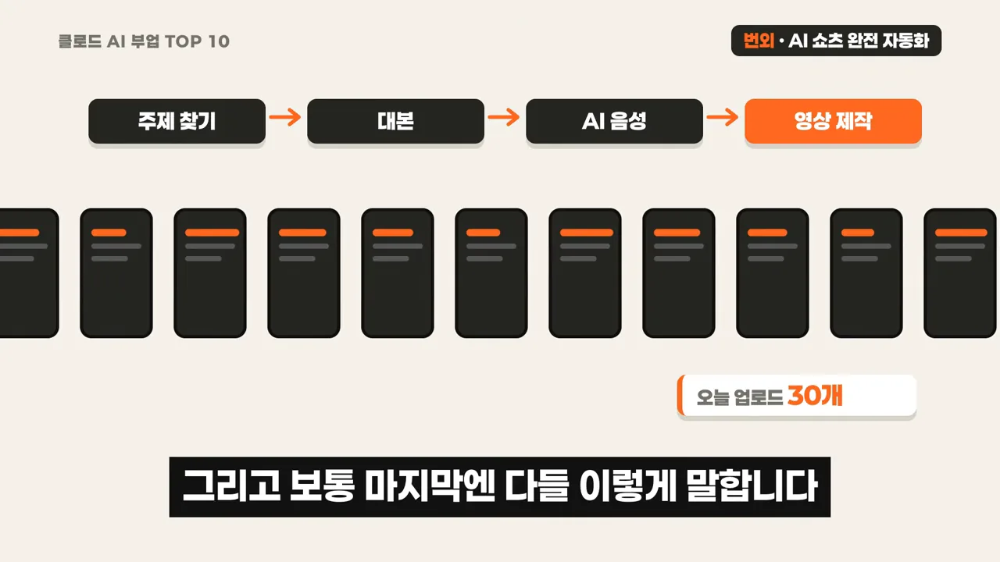
문제는 진입 장벽이 없다는 거예요. 내가 10분 만에 만들 수 있으면 전 세계 누구나 10분 만에 만들 수 있어요. 아래 그래프는 조회수가 어떻게 움직이는지 보여 줘요. 가끔 솟구치지만 대부분은 바닥이에요. 오른쪽 위 '조회수는 통제 불가', 아래 '다음 영상도 터진다는 보장 없음'이 발표자의 이유예요.
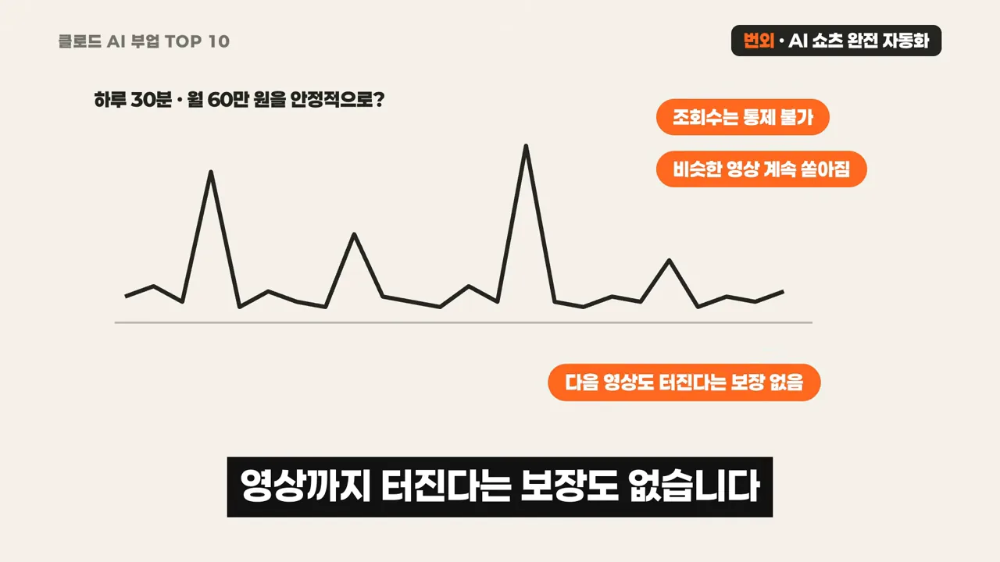
발표자는 쇼츠 자체를 하지 말라고 하지 않아요. 내 상품, 내 롱폼 영상, 내 서비스로 사람을 데려오는 유입 수단으로는 좋다고 해요. 걸러야 할 건 '하루 20개 자동 업로드하면 광고 수익이 쌓이겠지'를 사업 모델로 삼는 거예요. 정리 화면은 강점과 약점을 한 줄씩 적고 '거르기' 도장을 찍어요.
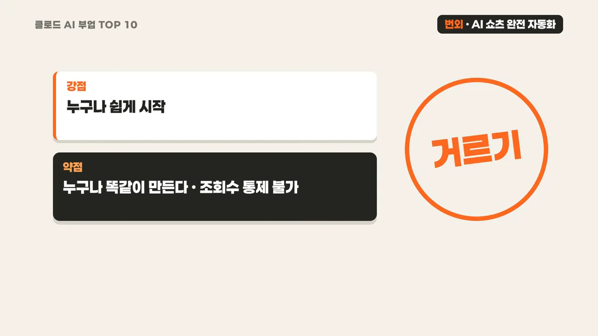
AI를 쓰는 게 문제가 아닙니다 AI 덕분에 누구나 대량 생산할 수 있는 걸 경쟁력이라고 착각하는 게 문제입니다
— 영상 04:27
10~8위: 인스타툰, 리서치·PPT 대행, 미니 사이트·웹게임
10위 · 인스타툰
그림을 전혀 못 그리는 주부가 인스타툰으로 1년에 4억 원 가까이 번 사례로 시작해요. 툰 한 편에 20분도 안 걸린대요. 그림은 AI가 그리니까요. 핵심은 그림이 아니라 광고주가 돈을 내고 싶어 하는 컨셉이에요. 그냥 육아일기는 일기로 끝나요. '아이 키우며 아낀 돈으로 재테크하는 엄마'로 잡으면 은행, 증권사, 보험사가 광고를 붙이고 싶어 해요. 이렇게 컨셉만 잘 잡아 팔로워 1만이 안 돼도 광고를 받는 계정이 많대요.
역할은 이렇게 나눠요. 컨셉, 캐릭터 설정, 에피소드 대본은 클로드에게 맡겨요. 그림은 이미지 AI에게 캐릭터 하나를 고정해 그리게 해요. 아래 화면 왼쪽 '캐릭터 하나 고정'과 '챗GPT가 더 잘한다'가 그 얘기예요. 가운데 월~일 칸은 하루 한 편씩 올린다는 뜻이고, 아래 세 버튼이 계정이 커졌을 때 생기는 수익이에요.
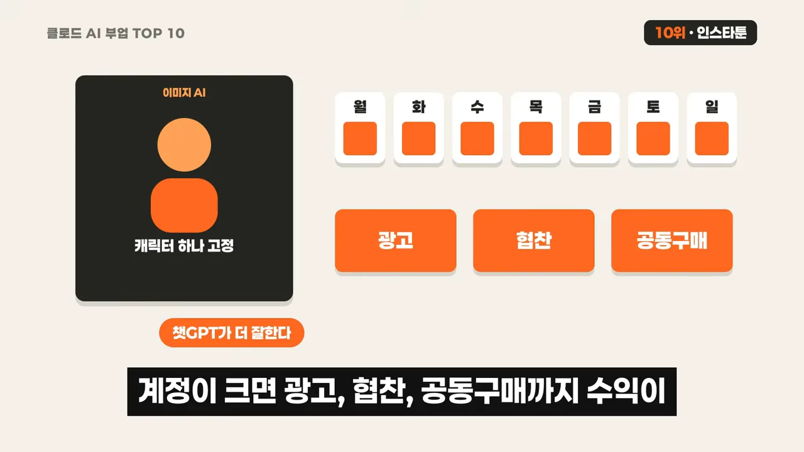
9위 · 리서치·PPT·제안서 대행
오늘 방법 중 현금이 가장 빨리 들어오는 쪽이에요. 해외 프리랜서 사이트 파이버에는 쇼핑몰 키워드 분석 대행 서비스가 있어요. 화면 오른쪽처럼 건당 몇만 원짜리 주문이 줄지어 대기 중이에요. 사장님들은 상품 등록할 시간도 없으니 '어떤 키워드로 검색에 걸릴지', '경쟁 상품은 어떻게 파는지'를 조사해 줄 사람이 필요해요.
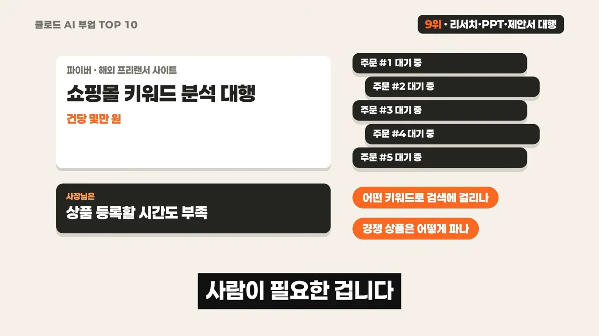
이 조사는 클로드의 리서치 기능으로 해요. 상품과 시장을 알려 주면 수십 개 자료를 뒤져 긴 보고서를 만들어요. 화면 왼쪽 보고서의 '자료 38개'가 그 결과예요. 그대로 넘기면 안 되고, 오른쪽처럼 '사장님이 한눈에 보기 좋게 핵심만 담아 정리해 줘'라고 한 번 더 시켜야 납품용 요약이 나와요.
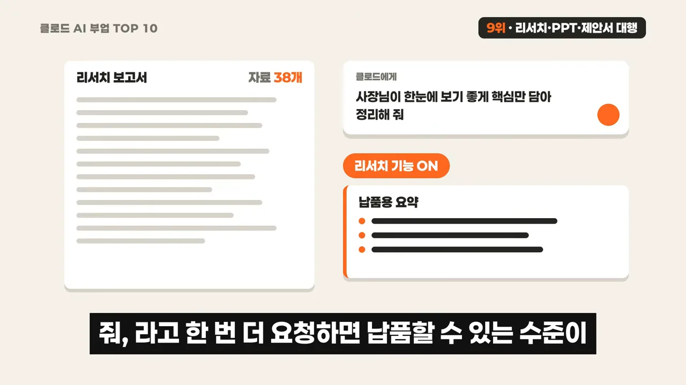
이걸 크몽에 등록하면 준비는 끝이래요. 팁은 분야를 하나로 좁히는 거예요. '스마트스토어 식품 카테고리 키워드 분석 전문'처럼 좁힐수록 오히려 주문이 들어온대요. 사장님들은 전문가를 찾으니까요.
PPT(PowerPoint presentation)와 제안서도 같은 줄기예요. 회사, 강사, 학원, 병원은 계속 자료를 만들어서 이미 돈을 내는 고객이 많아요. 60페이지 보고서를 발표 자료 20장으로 바꿔 달라는 주문이라면, 바로 슬라이드부터 만들지 않아요. '발표 목적 기준으로 분석해서 20장짜리 스토리라인부터 짜 줘'라고 시켜요. 슬라이드마다 제목, 핵심 메시지, 필요한 자료, 추천 시각 자료를 먼저 잡으면 시간이 크게 줄어요.
그런데도 9위인 건 '수정 지옥' 때문이에요. 폰트 키워 주세요, 색 바꿔 주세요, 아까 버전이 나은 것 같아요. 문제는 AI가 아니라 사람에서 터져요. 그래서 상품 이름부터 바꾸래요. 아래 화면처럼 'PPT 만들어 드립니다'를 지우고 '원고만 주시면 발표 구조 설계부터 최종 자료까지'로 팔아요.
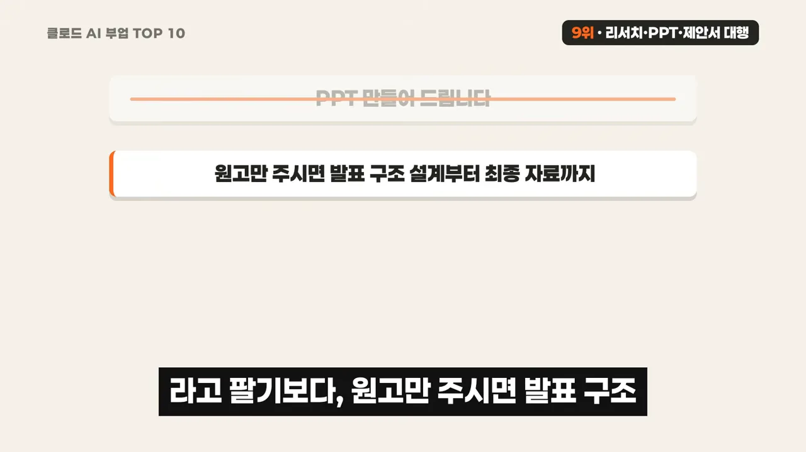
8위 · 광고 수익 미니 사이트·웹게임
클로드 코드로 사이트를 만들고 구글 애드센스 광고를 붙이는 방식이에요. 발표자는 이렇게 만든 사이트 하나로 매달 평균 12만 원쯤 받는대요. 크지 않지만 한 번 세팅하면 거의 손대지 않아도 들어온다는 게 핵심이에요. 만드는 순서는 이래요. 내가 불편했던 것 하나를 푸는 사이트를 만들고, 애드센스 심사를 통과하고, 구글 서치 콘솔과 네이버 서치어드바이저에 등록해 검색에 걸리게 해요. 발표자는 이런 사이트를 열 개까지 늘려 보라고 해요. 12만 원짜리 열 개면 120만 원이라는 계산이에요.
여기에 게임을 얹으면 더 강해져요. 예로 든 건 1인 개발자 피터 레벨스예요. AI에게 코딩을 전부 맡겨 몇 시간 만에 비행 게임 첫 버전을 만들었어요. 화면 아래 카드처럼 17일 만에 연 매출 환산 100만 달러를 넘겼어요. 돈은 동그라미 친 '광고판 AD'에서 나왔어요. 게임 속 하늘에 뜬 광고판을 기업에 팔았고, 유료 아이템도 팔았어요.
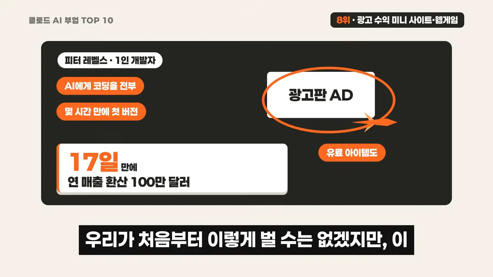
게임이 돈이 되는 이유는 체류 시간이에요. 아래 막대에서 회색이 일반 사이트, 주황이 게임이에요. 게임은 한 번 잡으면 10분, 20분이 금방 가요. 광고 수익은 오래 머물수록 커지니, 같은 방문자여도 수익이 훨씬 잘 나와요.
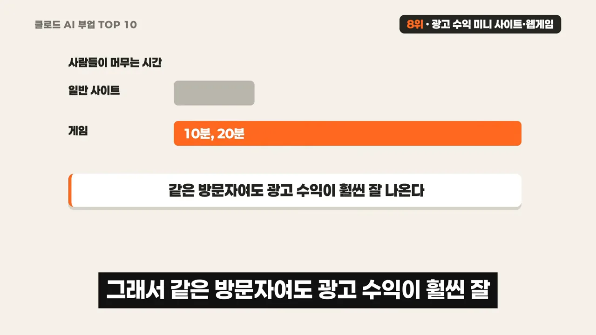
거창한 게임은 필요 없어요. 화면 위쪽처럼 퍼즐, 숫자 맞추기, 클릭 게임이면 충분하고, 클로드 코드로 10분 남짓이면 실제로 돌아가는 게임이 나온대요. 완성한 게임은 내 사이트에 올려 애드센스 수익을 키우거나, 해외 게임 사이트 itch.io에 올려 팔거나 후원을 받아요.
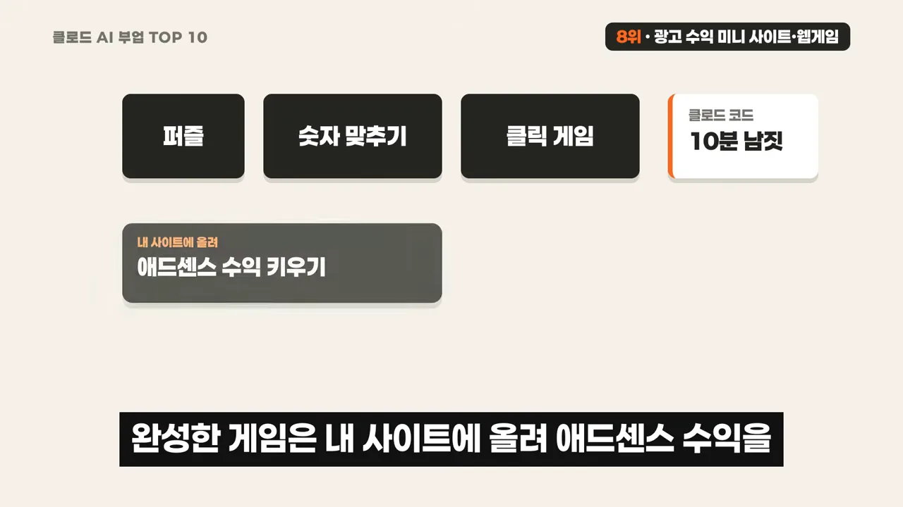
약점은 애드센스 심사와 검색 노출까지 시간이 걸리고, 사이트 하나가 버는 돈이 작다는 거예요. 그래서 8위예요.
7~6위: 네이버 홈판 글, 디지털 상품·전자책·강의
7위 · 네이버 홈판 글 자동화
발표자가 직접 자동화해 수익까지 본 방법이에요. 해 보니 중요한 건 AI가 썼느냐 사람이 썼느냐가 아니었대요. 사람들이 실제로 보고 싶어 하는 글이냐가 더 중요했어요. 아무 키워드로 AI 글 100개를 써서 올리는 건 자동화가 아니라 쓰레기 대량 생산이라고 선을 그어요.
발표자가 말하는 자동화는 아래 여섯 단계예요. 카드 위의 작은 꼬리표를 보세요. 1~5단계에는 'AI', 6단계 '사람이 직접 확인'에만 '사람'이 붙어 있어요. 반복되는 부분만 AI에게 넘기고 마지막 판단은 사람이 해요.
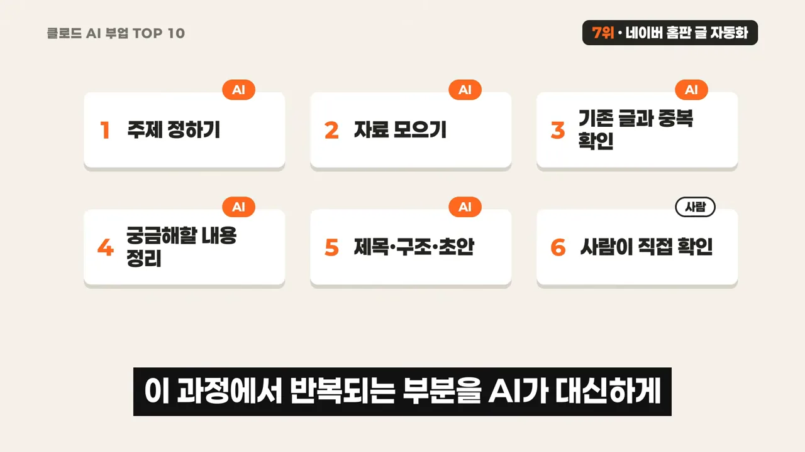
이걸 가능하게 하는 게 클로드 코드 프로젝트 폴더예요. 화면 왼쪽 폴더에 기존에 쓴 글, 키워드, 조회수가 잘 나온 글, 제목, 카테고리, 자료 출처, 선호하는 글 구조를 계속 쌓아요. 그러면 오른쪽 세 문장처럼 일을 시킬 수 있어요. 기존 글과 겹치지 않는 주제 찾기, 독자가 가장 궁금해할 질문 뽑기, 답이 먼저 나오도록 구조 잡기예요.
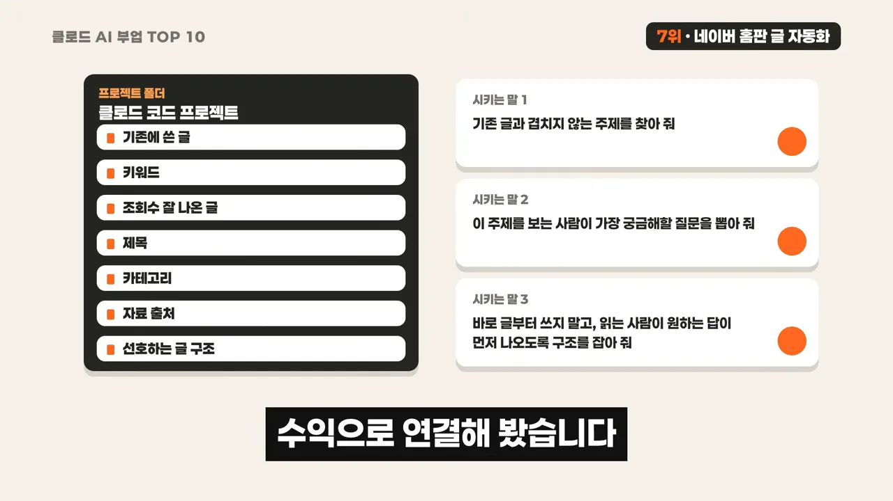
수익은 확인했지만 7위예요. 외주처럼 '이거 만들어 드릴 테니 35만 원 주세요' 하고 바로 받는 구조가 아니라서요. 글이 바로 노출되지도 않고, 모든 글이 홈판에 뜨지도 않고, 모든 방문자가 애드포스트 수익으로 이어지지도 않아요. 첫 수익까지 오래 걸리고 플랫폼에 기대야 한다는 게 약점이에요.
6위 · 디지털 상품·전자책·강의
해외 사이트 엣시의 한 상점 이야기로 시작해요. 다이어리 꾸미기용 PDF(Portable Document Format)를 파는데, 문 연 지 1년 남짓에 5만 개 넘게 팔았대요. 화면 오른쪽 위 꼬리표가 이 상품의 장점이에요. 재고 없음, 배송 없음, 원가 0원이에요. 그 아래는 클로드로 만들 수 있는 종류예요. 플래너, 체크리스트, 워크시트, 캔바 템플릿, 노션 템플릿이에요.
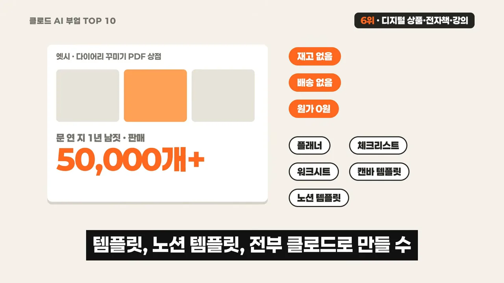
'직장인을 위한 주간 생산성 플래너'를 시키면 누구나 비슷한 걸 만들어요. 아래 화면 위쪽 흐릿한 카드들이 그 똑같은 플래너들이에요. 그래서 무엇을 만드느냐보다 누구에게 파느냐가 중요해요. 아래 두 줄처럼 '예쁜 다이어리'를 'ADHD 직장인을 위한 하루 20분 업무 정리 플래너'로, '영어 공부 템플릿'을 '토익 750점 직장인을 위한 4주 단어 복습 템플릿'으로 바꿔요.
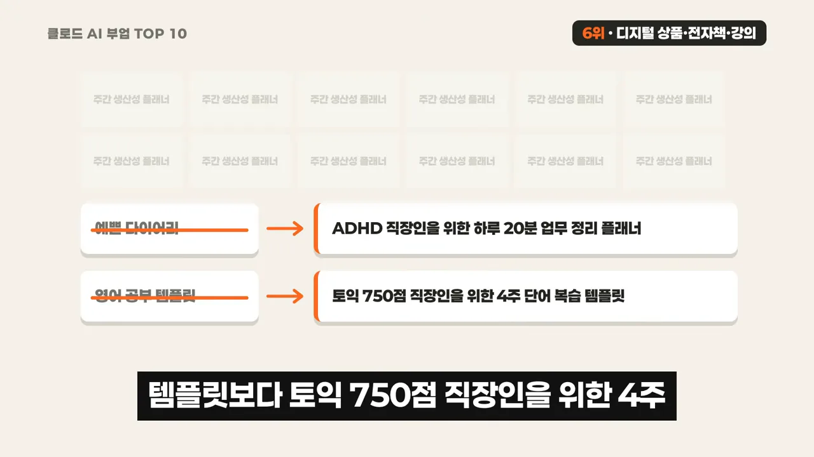
흔한 실수는 AI로 파일 100개를 만들어 전부 올리는 거예요. 안 팔리는 상품 100개를 빨리 만드는 건 사업이 아니래요. 대신 지금 팔리는 상품의 리뷰를 클로드에게 분석시켜, 사람들이 아쉬워하는 부분을 채운 상품을 만들어요. 국내는 크몽 전자책으로, 해외는 엣시에 올려요.
전자책과 강의는 발표자가 직접 만들어 팔아 본 분야예요. 다만 '클로드한테 전자책 한 권 써 줘'로 나온 걸 파는 건 추천하지 않는대요. 아래 두 카드가 그 차이예요. 왼쪽 'AI에게 지식을 만들어 달라'에는 X, 오른쪽 '내가 실제로 경험한 지식을 AI로 상품화'에는 체크가 붙어 있어요.
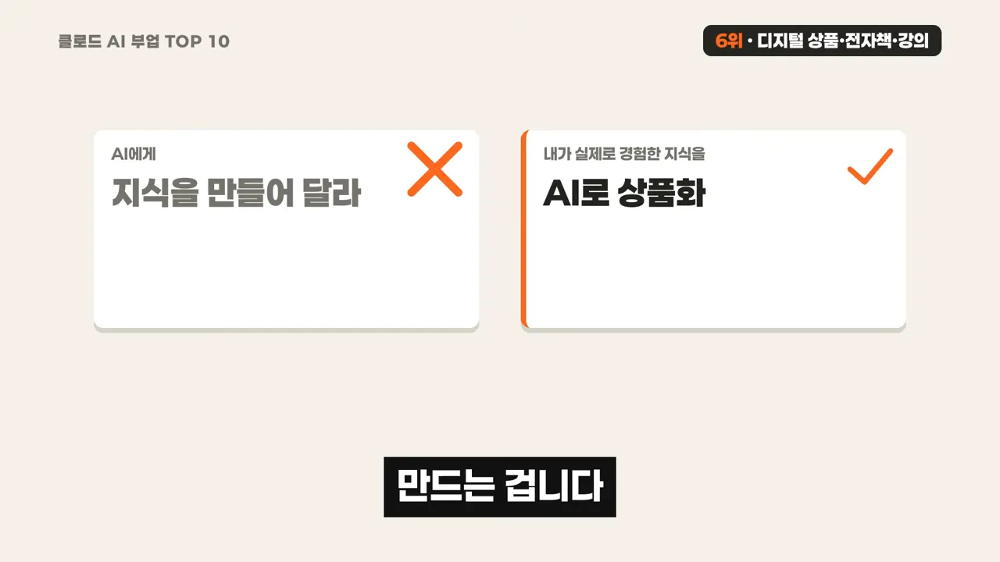
그 경험은 평소에 적어 둬야 남아요. 클로드 코드로 홈페이지를 여러 번 만들었다면, 아래 메모지 여섯 장 같은 게 생겨요. 막혔던 부분, 잘된 프롬프트, 실패한 프롬프트, 고객 질문, 수정 요청, 영업 노하우예요. 이걸 계속 기록해 두고, 나중에 '지난 한 달 기록을 읽고 초보자가 결과물 하나를 만드는 순서로 목차를 짜 줘'라고 시키면 전자책 재료가 돼요.
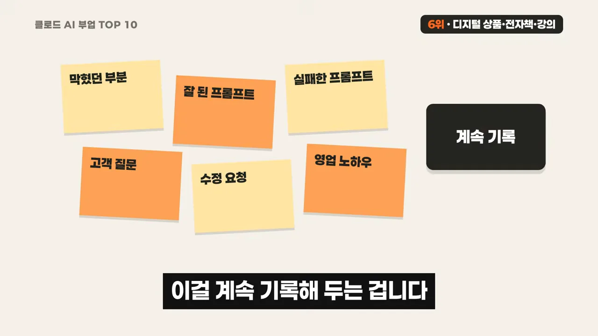
그런데도 6위인 건 팔 사람이 먼저 있어야 해서예요. 아래 화면 위쪽 줄이 흔한 순서예요. 전자책 120페이지를 쓰고, 강의 15시간을 찍고, 마지막에 어디서 팔지 고민해요. 아래쪽 줄이 발표자가 권하는 순서예요. 콘텐츠를 먼저 올리고, 반복되는 질문을 확인하고, 직접 경험을 쌓은 뒤 상품화해요.
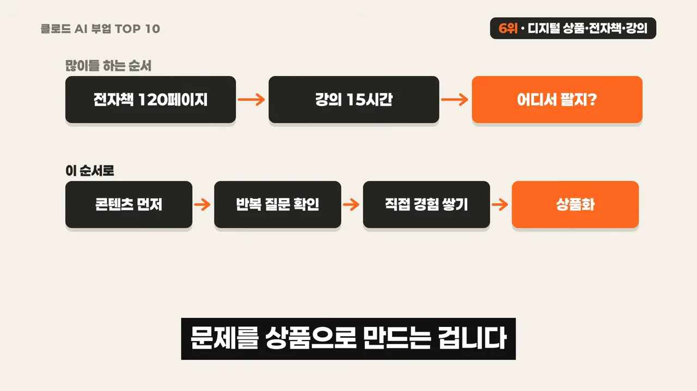
이 순서를 따르면 무료 유튜브 콘텐츠에서 전자책으로, 전자책에서 강의로, 강의에서 컨설팅이나 대행으로 이어져요. 외주는 고객 열 명이면 열 번 일해야 하지만, 전자책과 녹화 강의는 한 번 만든 걸 여러 사람에게 팔 수 있어요.
5~4위: 홈페이지·랜딩페이지, 프로그램 외주
5위 · 홈페이지·랜딩페이지
예전엔 HTML, CSS(Cascading Style Sheets), 자바스크립트를 배우고 디자인도 할 줄 알아야 했어요. 지금은 클로드 코드 덕분에 진입 장벽이 많이 낮아졌어요. 중요한 건 코드 실력이 아니라 고객이 어떤 홈페이지를 원하는지 파악하는 능력이래요. 처음이라면 고객부터 찾지 말고, 미용실, 필라테스, 세무사 같은 업종 하나를 골라 가상 포트폴리오부터 만들어 보래요.
클로드에게도 '미용실 홈페이지 만들어 줘'로 끝내지 않아요. 화면 위 요청문처럼 누가 주 고객인지, 홈페이지 목표가 무엇인지 알려 주고 '바로 코딩하지 말고 동선부터 설계해 줘'라고 해요. 아래 세 칸이 그 동선이에요. 고객이 들어와서, 동선을 따라, 네이버 예약까지 가요.
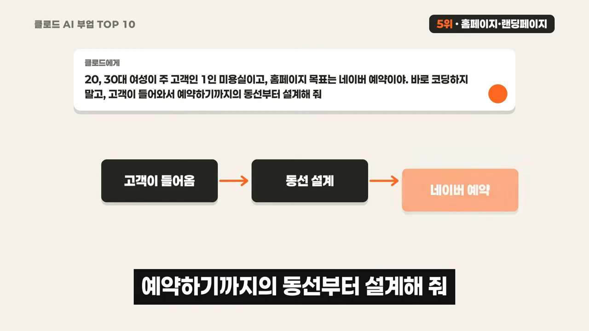
결과물이 나오면 예약 버튼, 가격표, 모바일 화면을 계속 고치며 완성도를 올려요. 포트폴리오가 몇 개 생기면 실제 고객을 찾아요. 화면 오른쪽 숫자처럼 첫 고객은 25만 원이어도, 35만 원이어도 괜찮대요. 첫 목표는 내가 AI로 만든 결과물에 누군가 돈을 내게 만드는 거예요.
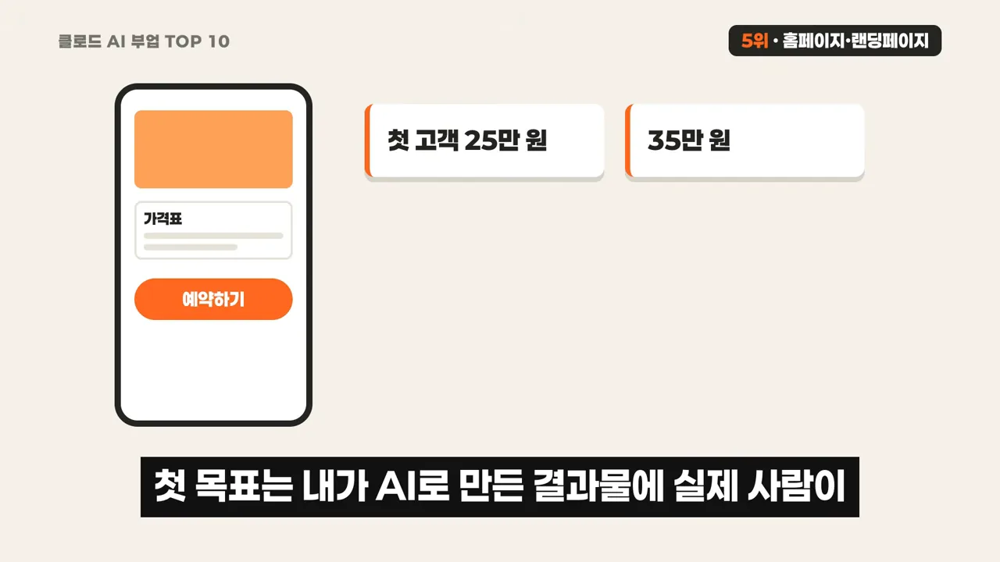
홈페이지는 한 번 만들어 주면 끝나서 반복 매출이 약해요. 그래서 랜딩페이지로 한 단계 올려요. 아래 두 카드가 차이예요. 홈페이지는 사업을 소개하고, 랜딩페이지는 상품을 팔아요. 아래 꼬리표는 랜딩페이지가 필요한 곳이에요. 온라인 강의, 전자책, 컨설팅, 학원 모집, 병원 이벤트예요.
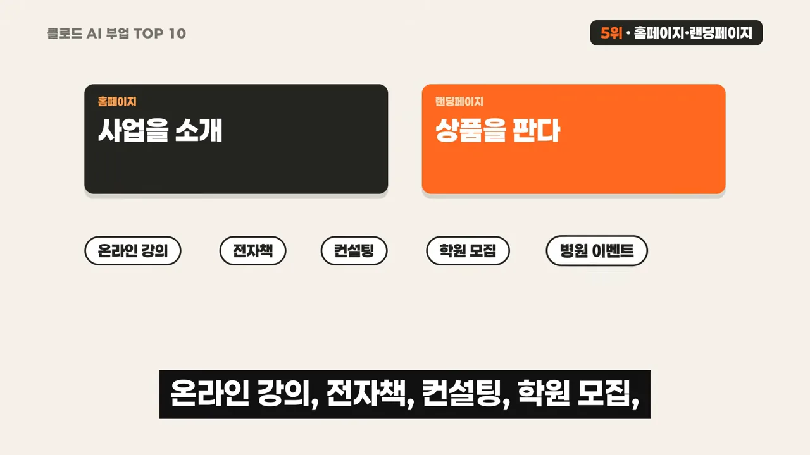
'웹페이지 예쁘게 만들어 드립니다'로 팔면 단가가 안 올라요. '상품 판매 구조부터 카피라이팅, 디자인, 페이지 제작까지'로 팔아야 해요. 일하는 순서는 아래 화면이에요. 먼저 왼쪽처럼 고객 상품을 분석하고 '누가 이 상품을 살까?', '왜 사야 할까?'를 정리해요. 그다음 가운데 세로 줄 순서로 페이지를 짜요. 문제 제기, 공감, 해결책, 상품 소개, 후기, 가격, Q&A, 구매 버튼이에요.
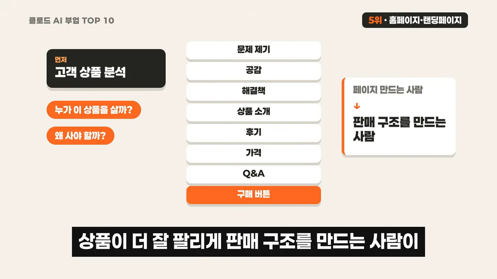
30만 원짜리 두 건이면 월 60만 원이에요. 첫 매출 경험을 얻기 좋고 판매 구조로 단가를 올릴 수 있지만, 홈페이지 쪽은 반복 매출이 약해서 5위예요.
4위 · AI 프로그램 개발 외주
발표자가 직접 고객에게 돈을 받아 본 방법이에요. 코딩을 못 해도 클로드 코드로 남의 프로그램을 만들어 줄 수 있느냐는 물음에 '됩니다'라고 답해요. 다만 개발 지식이 전혀 없어도 된다는 뜻은 아니래요.
거대한 앱은 필요 없어요. 쇼핑몰 사장님이 매일 주문 데이터를 엑셀로 정리한다고 해 봐요. 아래 화면 같은 표를 열고, 필요 없는 열을 지우고, 상품별로 나누고, 매출을 계산해 보고서로 만들어요. 매일 40분이 들어요. 엑셀 파일을 넣으면 이걸 자동으로 해 주는 작은 프로그램을 만들어 드리는 거예요.
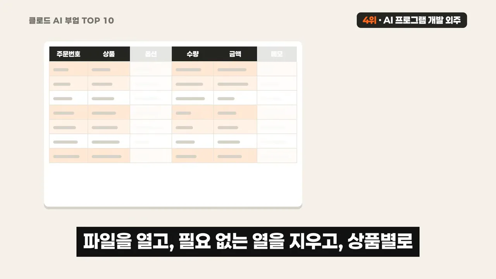
회사라면 반복해서 만드는 견적서를 자동으로, 부동산이라면 매물 정보로 고객용 소개 자료를 자동으로 만들 수 있어요. 고객은 어떤 언어로 개발했는지 궁금해하지 않아요. '그래서 내 일이 편해지나요?' 하나만 궁금해해요. 그래서 'AI 프로그램 개발해 드립니다'보다 '매일 40분씩 걸리던 엑셀 작업을 버튼 한 번으로 끝내 드립니다'가 훨씬 강하대요.
4위에 머무는 이유는 오류예요. 아래 화면의 네 모서리가 납품한 프로그램이 멈추는 경우예요. 고객 컴퓨터에서 안 되거나, 엑셀 양식이 바뀌거나, 쓰던 API(Application Programming Interface)가 바뀌거나, 예상 못 한 데이터가 들어와요. 가운데 질문 '한 번 돌아갔다고 끝?'에 대한 답은 '아니요'예요.
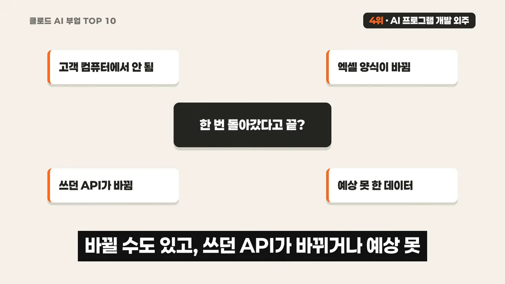
그래서 납품하려면 최소한 아래 세 가지는 알고 있어야 한대요. 어떤 구조로 돌아가는지, 어디서 오류가 날 수 있는지, 문제가 생기면 무엇부터 확인할지예요.
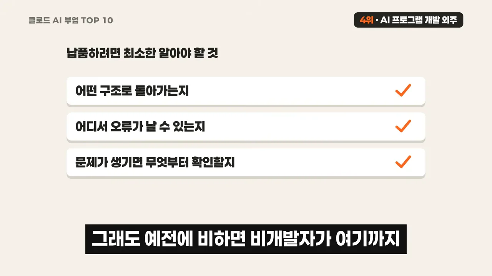
그래도 비개발자가 들어올 수 있는 장벽은 분명 낮아졌어요. 고객 시간을 실제로 줄여 주는 프로그램이면 한 건으로도 월 60만 원에 가까워져요. 유지 보수와 책임이 따라와서 4위예요.
3~1위: 업무 자동화, SNS·유튜브 운영, 콘텐츠 마케팅 대행
3위 · AI 업무 자동화
4위가 작은 도구 하나를 만들어 주는 거라면, 3위는 회사가 일하는 과정 자체를 줄여 주는 거예요. 예로 든 건 매주 하는 경쟁사 조사예요. 아래 화면 위쪽 줄처럼 경쟁사 홈페이지에 들어가 새 상품, 가격, SNS(Social Networking Service)를 확인하고 엑셀에 정리해요. 이게 매주 4시간이에요.
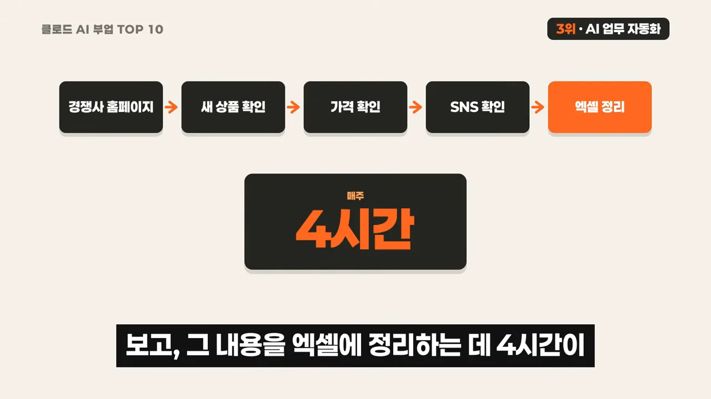
여기서도 'AI 자동화 구축해 드립니다'라고 팔지 않아요. '매주 4시간 걸리던 경쟁사 조사를 40분으로 줄여 드리겠습니다'라고 해요. 그리고 아래 화면처럼 '처음부터 100% 자동화'는 지우고, AI가 80%를 맡고 사람이 20%를 확인하는 구조로 짜요.
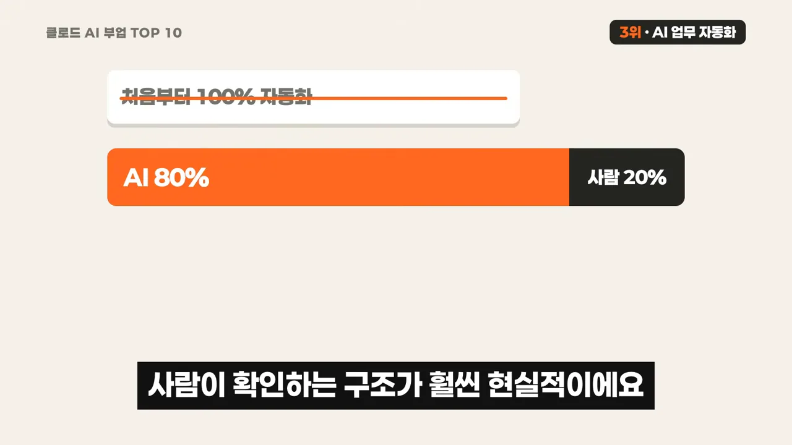
한 번 구축하고 끝나지 않고 유지 보수로 이어지면 반복 매출도 생겨요. 그래서 3위예요.
2위 · SNS·유튜브 운영 대행
사업자들은 SNS를 해야 하는 걸 알지만 시간이 없어요. 피부과 원장님은 진료도 하고, 직원도 관리하고, 병원도 운영해야 해요. 거기에 '이번 주 인스타에 뭐 올리지'까지 고민해야 하죠. 이 귀찮은 일을 대신해 드리는 거예요.
방법은 고객마다 클로드 코드 프로젝트를 하나씩 만드는 거예요. 아래 화면 폴더에 병원 정보, 대표 서비스, 기존 콘텐츠, 자주 묻는 질문, 원장님 말투, 싫어하시는 표현, 반응 좋았던 콘텐츠를 쌓아요. 첫 달엔 평범한 AI 결과물이지만, 몇 달 지나면 이 고객에게 맞는 콘텐츠가 보이면서 작업이 점점 빨라진대요.
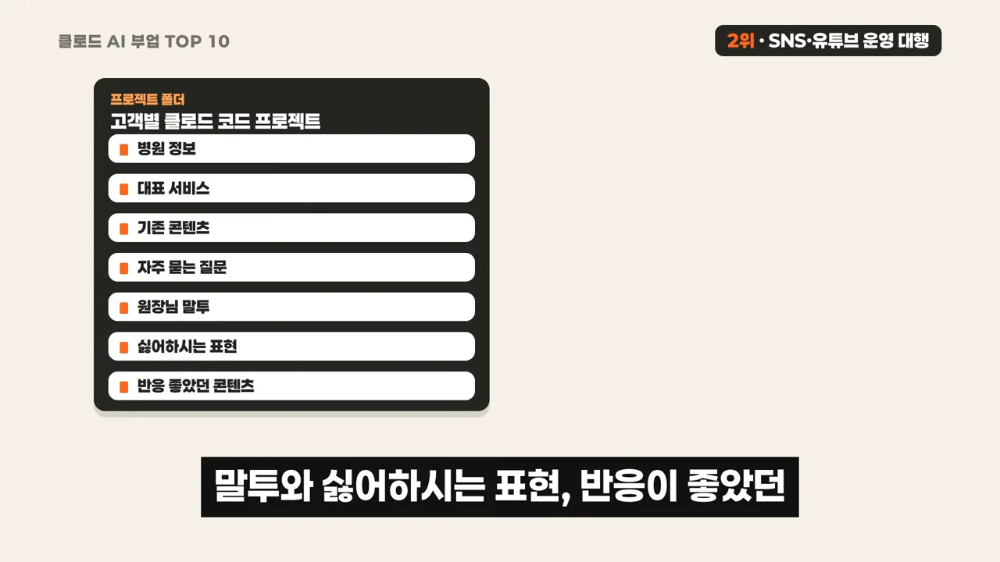
홈페이지와 가장 다른 점은 다음 달에도 SNS는 해야 한다는 거예요. 고객 한 곳과 월 60만 원에 계약하면 영상의 목표는 바로 달성이에요.
유튜브는 한 단계 더 커요. 아래 화면 왼쪽이 피해야 할 방식이에요. '영상 한 편 25만 원에 편집해 드립니다'로 팔면 더 싸게, 더 더 싸게 해 주는 사람과 단가 경쟁을 해야 해요. 오른쪽 주황 카드처럼 상품 자체를 바꿔요. '대표님 유튜브 한 달 4편 운영, 기획부터 대본·썸네일·편집까지'예요.
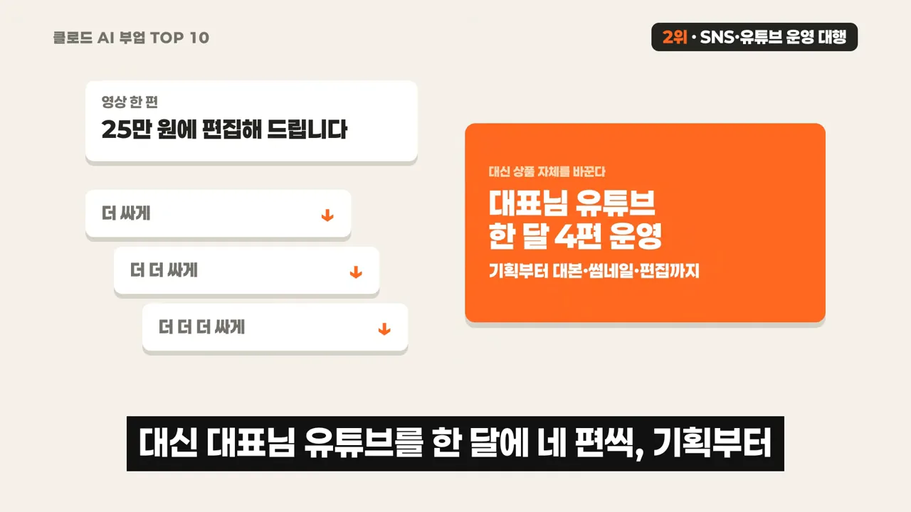
벤치마킹 방법도 짚어요. 조회수 높은 영상만 찾으면 안 된대요. 아래 그래프에서 점들은 채널 구독자 수에 따른 보통 조회수예요. 오른쪽 아래 회색 점 '구독 100만·조회 20만'은 선 아래에 있어요. 왼쪽 위 주황 원 '구독 1만·조회 30만'은 선 위로 크게 튀어 있어요. 이렇게 평균보다 유독 잘된 영상이 더 중요한 힌트예요.
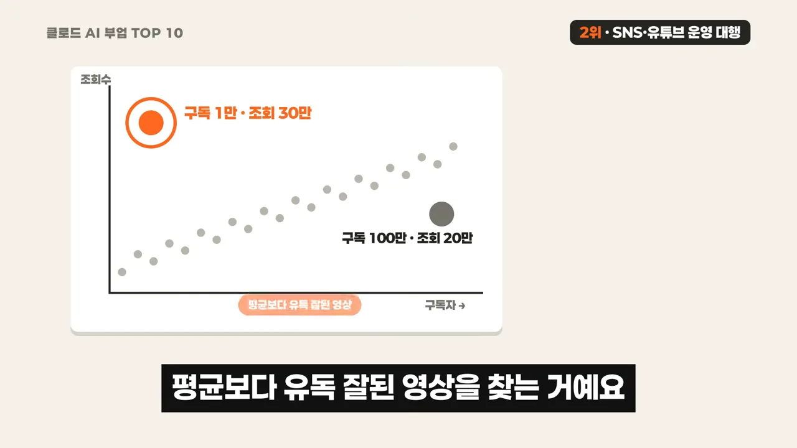
그런 영상을 찾으면 왜 눌렀는지, 처음 30초에 무슨 말을 했는지, 어느 타이밍에 다음 궁금증을 만들었는지 분석해요. 그 구조를 고객 채널에 맞게 다시 적용해요. 고객 한 곳으로 월 60만 원을 훌쩍 넘길 수 있지만, 고객 관리가 필요하고 매달 꾸준히 결과물을 내야 해서 2위예요.
1위 · AI 콘텐츠 마케팅 대행
1위는 지금까지의 방법을 하나로 잇는 일이에요. 처음엔 SNS 하나만 맡았다고 해 봐요. 일하다 보면 고객 사업의 다른 문제가 보여요. 영상이 말로 설명한 확장 순서를 아래에 그렸어요.
그러면 'AI를 잘 쓰는 사람'이 아니라 '고객 사업의 문제를 AI로 해결해 주는 사람'이 돼요. 프로젝트 안에는 그 고객의 데이터가 계속 쌓여요. 아래 화면 왼쪽 '나'의 칸이 그거예요. 직원들의 반복 업무, 대표님이 싫어하는 표현, 고객 질문, 잘된 콘텐츠예요. 오른쪽 '새 경쟁자'의 칸은 '0부터 처음부터 공부'로 비어 있어요.
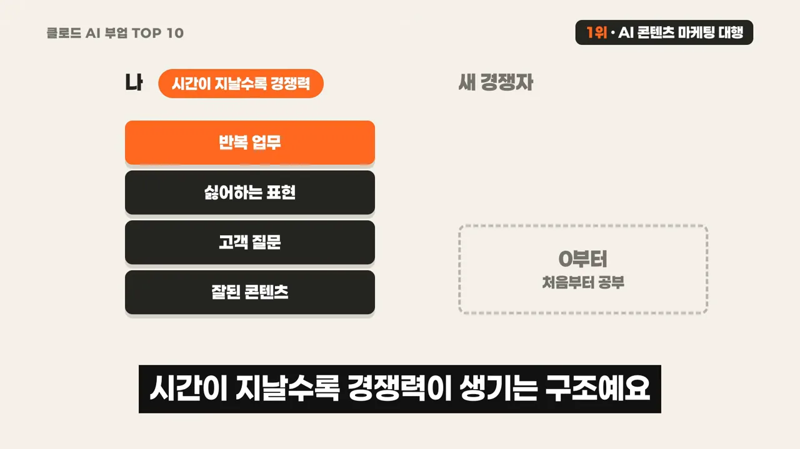
물론 초보자가 오늘 시작해 내일 할 수 있는 일은 아니래요. 홈페이지 하나, 프로그램 하나, SNS 고객 하나처럼 작은 경험이 쌓여서 올라오는 자리예요.
AI로 돈을 벌려 하지 말고 결과물을 파세요
마지막 대목에서 발표자는 '결국 AI로 돈 버는 건 일부 사람들 이야기 아니냐'는 질문에 답해요. 자기도 처음엔 그렇게 생각했대요. 그런데 해 보니 돈을 받은 이유는 AI를 잘 써서가 아니었어요. 전자책도, 글 작성도, 프로그램 외주도 같았어요. 고객은 원하는 결과가 나와서 돈을 냈어요.
AI로 돈을 벌려고 하지 마세요 AI로 누군가 돈을 내고 싶어 하는 결과물을 만드세요
— 영상 24:03
같은 일, 다르게 파는 말
이 원칙은 순위 곳곳에서 상품 이름을 바꾸는 장면으로 나와요. 영상에 흩어져 있던 예를 한 표로 모았어요. 왼쪽은 '무엇을 해 드린다'고 말하고, 오른쪽은 '고객의 무엇이 달라진다'고 말해요.
| 순위 | 이렇게 팔면 값이 안 올라요 | 이렇게 팔아요 |
|---|---|---|
| 9위 PPT 대행 | PPT 만들어 드립니다 | 원고만 주시면 발표 구조 설계부터 최종 자료까지 |
| 5위 랜딩페이지 | 웹페이지 예쁘게 만들어 드립니다 | 상품 판매 구조부터 카피라이팅·디자인·페이지 제작까지 |
| 4위 프로그램 외주 | AI 프로그램 개발해 드립니다 | 매일 40분씩 걸리던 엑셀 작업을 버튼 한 번으로 |
| 3위 업무 자동화 | AI 자동화 구축해 드립니다 | 매주 4시간 걸리던 경쟁사 조사를 40분으로 |
| 2위 유튜브 운영 | 영상 한 편 25만 원에 편집해 드립니다 | 대표님 유튜브를 한 달 네 편, 기획부터 편집까지 |
처음이라면 결과물 하나부터
경험도 없고 AI도 사업도 처음이라면, 눈에 보이는 결과물 하나부터 만들라고 해요. 홈페이지, 랜딩페이지, 간단한 프로그램 모두 좋대요. 전자책을 쓰고 싶다면 그 주제의 실제 경험부터 쌓고, 블로그를 하고 싶다면 글 100개 자동 생성 대신 좋은 글 하나를 직접 만들어 보래요. 그리고 3만 원이든 5만 원이든 시장에 내놓아 봐요. 누군가 처음으로 돈을 내는 경험이 중요하대요.
돈을 받기 전에는 '클로드 코드에 무슨 기능이 있지?'를 봐요. 받고 나면 '고객은 왜 이걸 샀지? 어디서 시간이 제일 오래 걸렸지? 반복 매출로 바꿀 수 없을까?'를 보게 돼요. 발표자는 이때부터 AI 공부가 사업 공부로 바뀐다고 말해요.
따로 하지 말고 이어서 돌려요
발표자는 순위보다 중요한 게 이것들을 따로 하지 않는 거라고 해요. 아래 원이 그 흐름이에요. 맨 위 '간단한 프로그램'을 만들고, 그 '과정을 유튜브에' 올려요. 영상을 본 누군가가 '저희 회사 것도 만들어 주실 수 있나요?' 하면 주황색 '첫 번째 고객'이 생겨요. 그 일을 하며 '새 문제를 자동화'하고, 그걸 '다시 콘텐츠로' 만들어요. 기록이 쌓이면 '전자책'과 '강의'가 되고, 강의를 본 사람이 다시 외주 고객이 돼요.
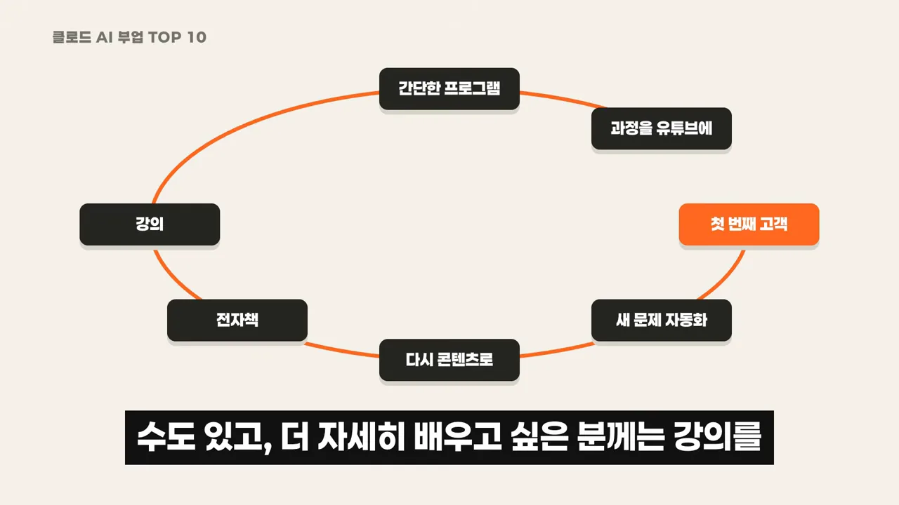
블로그도 같은 원에 들어가요. 아래 화면처럼 AI로 자동화한 블로그 글이 검색과 홈판으로 새 사람을 데려와요. 그중 일부는 애드포스트 수익이 되고, 일부는 유튜브로 넘어오고, 일부는 전자책·강의를 사요. 비어 있는 마지막 화살표는 발표자가 말한 '직접 외주를 맡기는' 사람이에요.
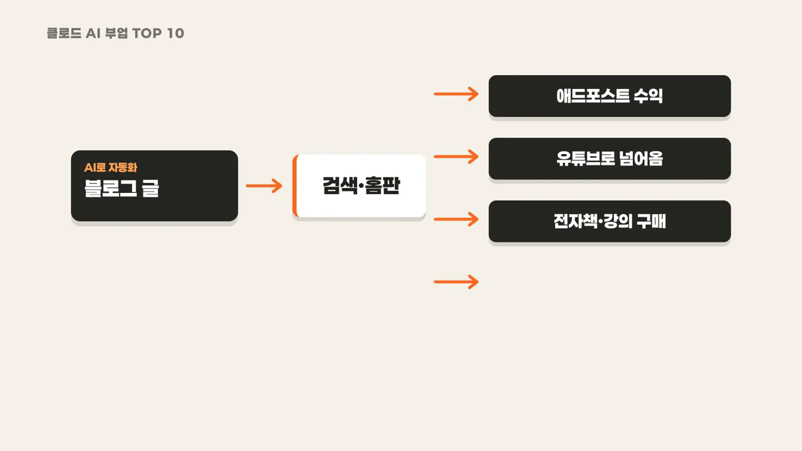
결국 콘텐츠가 고객을 데려오고, 고객 경험이 상품이 되고, 그 상품이 다시 새 고객을 데려오는 구조예요. 발표자는 이걸 'AI 하나로 갑자기 월 천만 원'이 아니라 혼자 할 수 있는 일의 범위를 AI로 넓혀 가는 거라고 말해요. 만드는 건 클로드가 하고, 누구에게 어떻게 팔지는 내가 정해요.
TOP 10 한눈에 보기
영상 끝 화면은 열 가지를 두 줄로 늘어놓고 '딱 하나 골라서 이번 주에 결과 하나'라는 주황 띠를 붙여요.
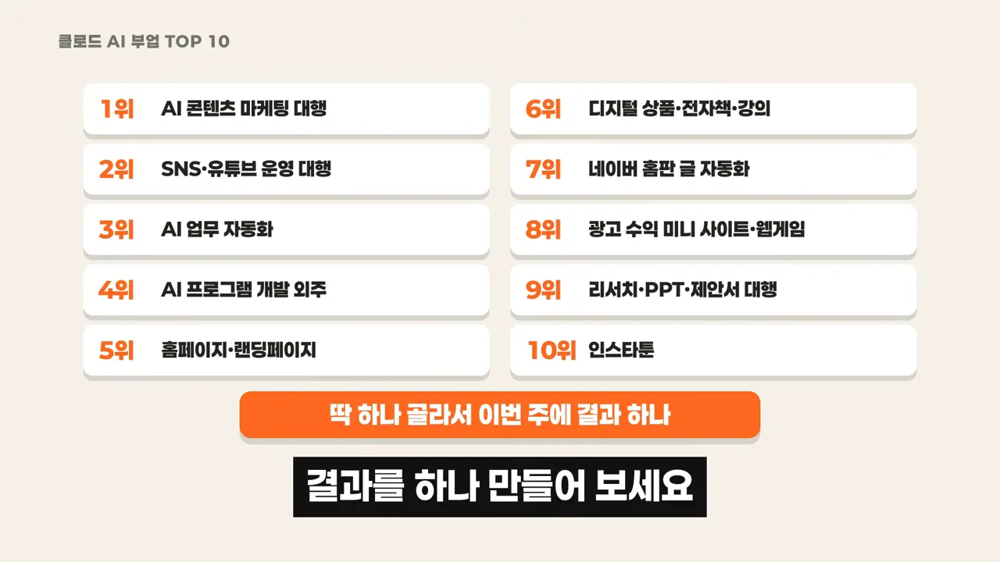
고를 때 참고하도록, 순위마다 영상의 정리 화면과 설명에서 나온 강점과 약점을 모았어요. 약점이 곧 그 순위에 머문 이유예요.
| 순위 | 방법 | 강점 | 약점 (순위가 내려간 이유) |
|---|---|---|---|
| 1위 | AI 콘텐츠 마케팅 대행 | 전부 하나로 연결, 쌓인 데이터가 경쟁력 | 초보자가 바로 하긴 어려워요 |
| 2위 | SNS·유튜브 운영 대행 | 고객 한 곳이면 월 60만 원 이상, 매달 이어짐 | 고객 관리, 매달 꾸준한 결과물 |
| 3위 | AI 업무 자동화 | 업무 과정 자체를 줄여 줌, 유지 보수로 반복 매출 | 영상은 따로 짚지 않았어요 |
| 4위 | AI 프로그램 개발 외주 | 한 건으로 월 60만 원 근접 | 유지 보수와 책임 |
| 5위 | 홈페이지·랜딩페이지 | 첫 매출 경험, 판매 구조로 단가를 올림 | 홈페이지는 반복 매출이 약해요 |
| 6위 | 디지털 상품·전자책·강의 | 한 번 만들어 여러 사람에게 팔아요 | 팔 사람이 먼저 있어야 해요 |
| 7위 | 네이버 홈판 글 자동화 | 발표자가 수익까지 직접 확인 | 첫 수익까지 오래 걸림, 플랫폼 의존 |
| 8위 | 광고 수익 미니 사이트·웹게임 | 한 번 세팅하면 관리가 거의 없어요 | 심사·검색 노출까지 시간, 사이트당 금액이 작음 |
| 9위 | 리서치·PPT·제안서 대행 | 현금이 가장 빨리 들어와요 | 수정 요청이 끝없어 하루 30분으로 굴리기 어려움 |
| 10위 | 인스타툰 | 그림 실력 없이 컨셉으로 광고주를 모음 | 계정이 커야 광고가 들어와 첫 수익이 늦음 |
발표자는 마지막으로 질문 하나를 바꿔 보라고 해요. 'AI로 뭘 만들 수 있지?'가 아니라 '누가 어떤 문제 때문에 이 결과물에 돈을 낼까?'예요.